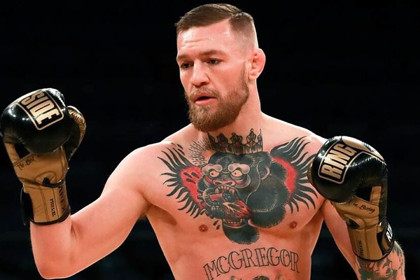

Conor McGregor es un peleador irlandés de artes marciales mixtas nacido el 14 de julio de 1988 en Dublín, Irlanda. Es uno de los atletas más famosos en la historia del MMA. McGregor se hizo mundialmente conocido por su carisma, su habilidad en el striking y su capacidad para finalizar peleas por nocaut. Fue el primer peleador en la historia de la UFC en ser campeón simultáneamente en dos divisiones diferentes.

Conor McGregor es famoso por su striking preciso, especialmente su poderosa izquierda con la que ha conseguido numerosos nocauts. También es conocido por su confianza, su habilidad para promocionar peleas y su gran impacto mediático.
Gracias a su estilo espectacular y su personalidad, McGregor se convirtió en uno de los peleadores más populares en la historia de las artes marciales mixtas.